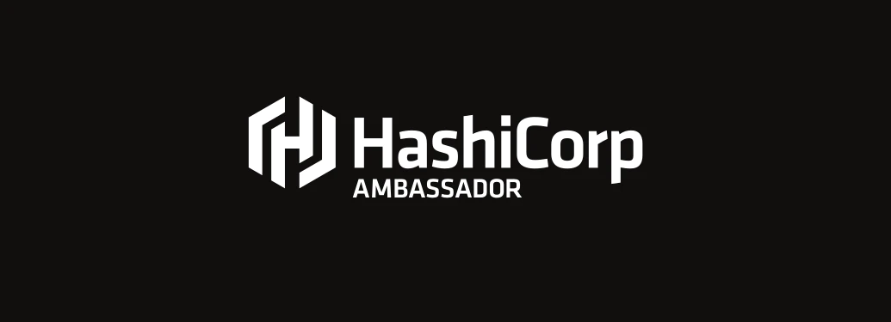
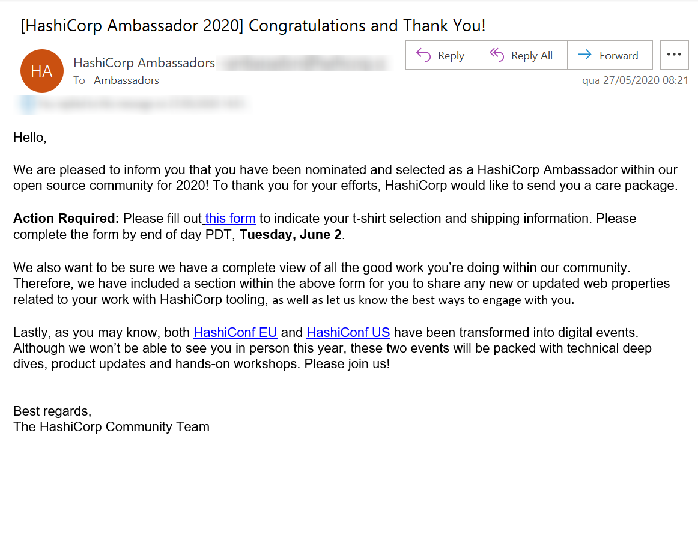

Hashicorp Ambassador 2020
Blog HashiCorp ComunidadeCompartilhe esse post nas redes sociais...
Olá Homelabers!
Vocês conhecem a HashiCorp? Aquele empresa super bacana que entre outros produtos do seu portfolio tem o Terraform?
Hashicorp Ambassador

No final de Março 2020, a Hashicorp postou um tweet em sua conta falando sobre um novo programa chamado HashiCorp Ambassador, para reconhecer membros da comunidade pelos seus eforços em compartilhar conteúdo sobre as ferramentas HashiCorp. Achei muito legal a proposta do programa e resolvi me inscrever, mesmo achando que não daria em nada.
Today we launched the HashiCorp Ambassador program, to recognize community members for their efforts in sharing knowledge around HashiCorp tools. The call for nominations is open now through April 5. Read more about the program here: https://t.co/DV3eikQmWF pic.twitter.com/IAPrCtpMSb
— HashiCorp (@HashiCorp) March 24, 2020
Foi quanto na última sexta-feira, 27/05, vi um e-mail na caixa de spam :( que me deixou muito feliz. Eu fui escolhido como um dos Hashicorp Ambassador 2020.

Ainda não está bem claro quais são os benefícios ou as atividades que os Hashicorp Ambassadors irão ter, mas de qualquer maneira, fazer parte desse grupo é bastante gratificante e estou certo que muito em breve mais informações serão dadas e eu volto para avisar vocês e atualizar o post.
Um pouquinho de história
A HashiCorp foi fundada por Mitchell Hashimoto e Armon Dadgar em 2012 com o objetivo de revolucionar o gerenciamento de datacenter: desenvolvimento, entrega e manutenção de aplicativos.
O primeiro produto lançado pela Hashicorp foi o Vagrant em 2010, que começou como um side-project pessoal do Mitchell Hashimoto e depois recebeu aporte de inventidores e o resto é história.
Nesse post, Mitchell e Armon conta a história da origem da Hashicorp. Vale assistir.
Os produtos da Hashicorp
Vagrant
O Vagrant é uma ferramenta para criar e gerenciar ambientes de máquinas virtuais em um único fluxo de trabalho. Com um fluxo de trabalho fácil de usar e foco na automação, o Vagrant reduz o tempo de configuração do ambiente de desenvolvimento, aumenta a paridade da produção e faz com que os “trabalhos na minha máquina” desculpem uma relíquia do passado.
Terraform
O Terraform é uma ferramenta para criar, alterar e criar versões de infraestrutura com segurança e eficiência. A Terraform pode gerenciar provedores de serviços existentes e populares, bem como soluções internas personalizadas.
Os arquivos de configuração descrevem para Terraform os componentes necessários para executar um único aplicativo ou todo o seu datacenter. O Terraform gera um plano de execução descrevendo o que fará para atingir o estado desejado e, em seguida, executa-o para construir a infraestrutura descrita. À medida que a configuração muda, o Terraform pode determinar o que mudou e criar planos de execução incrementais que podem ser aplicados.
A infraestrutura que o Terraform pode gerenciar inclui componentes de baixo nível, como instâncias de computação, armazenamento e rede, além de componentes de alto nível, como entradas DNS, recursos SaaS, etc.
Valt
O Vault é uma ferramenta para acessar com segurança segredos. Um segredo é qualquer coisa a que você deseja controlar rigidamente o acesso, como chaves de API, senhas ou certificados. O Vault fornece uma interface unificada para qualquer segredo, ao mesmo tempo em que fornece controle rígido de acesso e registra um log de auditoria detalhado.
Um sistema moderno requer acesso a vários segredos: credenciais de banco de dados, chaves de API para serviços externos, credenciais para comunicação de arquitetura orientada a serviços, etc. Entender quem está acessando quais segredos já é muito difícil e específico da plataforma. Adicionar rolagem de chaves, armazenamento seguro e logs de auditoria detalhados é quase impossível sem uma solução personalizada. É aqui que o Vault entra em ação.
Consul
O Consul é uma solução de malha de serviço que fornece um plano de controle completo com funcionalidade de descoberta, configuração e segmentação de serviço. Cada um desses recursos pode ser usado individualmente, conforme necessário, ou eles podem ser usados juntos para criar uma malha de serviço completo. O Consul requer um plano de dados e suporta um proxy e um modelo de integração nativo. O Consul é fornecido com um proxy embutido simples para que tudo funcione imediatamente, mas também suporta integrações de proxy de terceiros, como o Envoy.
Nomad
O Nomad é um utilitário de código aberto que reduz bastante a complexidade de automatizar, agendar e reagendar a implantação de aplicativos. O Nomad permite que engenheiros e desenvolvedores de operações trabalhem juntos mais de perto e melhora o custo total de propriedade utilizando melhor o hardware do servidor.
Packer
O Packer é uma ferramenta de código aberto para criar imagens de máquina idênticas para várias plataformas a partir de uma única configuração de código-fonte. O Packer é leve, é executado em todos os principais sistemas operacionais e tem alto desempenho, criando imagens de máquinas para várias plataformas em paralelo. O Packer não substitui o gerenciamento de configurações como Chef ou Puppet. De fato, ao criar imagens, o Packer pode usar ferramentas como Chef ou Puppet para instalar software na imagem.
Sentinel
O Sentinel é uma política incorporável como estrutura de código para permitir decisões de política refinadas e baseadas em lógica que podem ser estendidas para obter informações externas e tomar decisões.
Meu envolvimento com a Hashicorp
Agora você deve estar se perguntando: - Valdecir, qual o seu envolvimento com a Hashicorp?
Eu sou fã de carteirinha da empresa já há bastante tempo. Lembro que usei bastante Vagrant para estudar e depois - na medida do possível - cai de cabeça em Terraform.
Infelizmente, nas minhas últimas posições não tive como usar IaC no dia a dia, mas sou um estudioso do produto. Fiz algumas apresentações sobre Terraform no AWS User Group SP, no VMUG, no Microsoft e recentemente tenho usado bastante na Oracle.
Para quem não sabe, é possível fazer toda automação no OCI utilizando Terraform e temos o Resource Manager.
Cenas dos próximos capítulos
Quero me dedicar a aprender os outros produtos da Hashicorp, principalmente o Vault e o Packer e continuar mais a fundo com o Terraform.
Como disse anteriormente, Terraform é a principal ferramenta de IaC do OCI, então vou trazer bastante conteúdo de Terraform por aqui.
E por final, quero me aproximar mais do HashiCorp User Group São Pauloe da comunidade.
Até o próximo post pessoal! –VC
Compartilhe esse post nas redes sociais...Valdecir Carvalho
Nerd e pai orgulhoso da Mariana e João. Profissional Sênior de TI com foco em arquitetura de infraestrutura e cloud computing. Blogueiro, podcaster, palestrante, amante de comunidades técnicas, fotógrafo aposentado e adora jogos antigos.
#vExpert · #VMUGLeader · #VUGBrasil · #vBronwBagBrasil · #VeeamVanguard